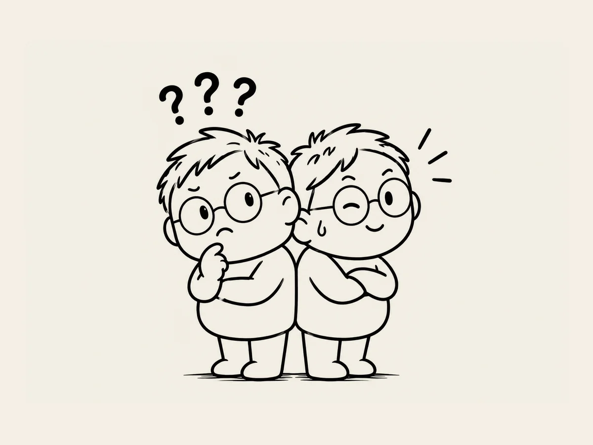

8.
わかったふりをしていたこと、けっこうあったんだな。
AIと仕事をしながら、
一つ気づいたことがある。
わからなければ、
聞けばいい。
あまりにも当たり前のことに聞こえる。
でも、
思っていた以上に大事だった。
ウェブサイトを作っていると、
わからないことが次々と出てくる。
自分が作ったものにも著作権は認められる？
このサイトの持ち主が僕だって、
どうやってわかる？
ウェブサイトって売ることもできるの？
お金はどうやって受け取る？
税金はどれくらいかかる？
作業を始めてから、
AIに次から次へと質問を浴びせた。
「ちょっと待って。それ何？」
説明を聞く。
それでもわからない。
「何を言ってるのかわからない。もっと簡単に説明して」
それでもわからない。
「小学生でもわかるように説明して」
「例を挙げて説明して」
あるとき、
ふと気づいた。
ああ。
これまで生きてきて、
わからないのに、
わかったふりをして済ませたことが
けっこうあったんだな。
今はAIがいる。
AI相手なら、
そんなことをする必要はなかった。
同じことを二回、三回聞いてもいい。
もっと簡単に説明してと言ってもいい。
それでもわからなければ、
また聞けばいい。
「わからない。もう一度、簡単に説明して」
